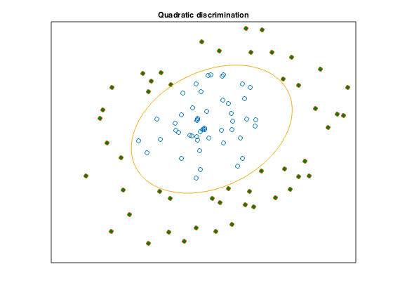

% Section 8.6.2, Boyd & Vandenberghe "Convex Optimization" % Original by Lieven Vandenberghe % Adapted for CVX by Joelle Skaf - 10/16/05 % (a figure is generated) % % The goal is to find an ellipsoid that contains all the points % x_1,...,x_N but none of the points y_1,...,y_M. The equation of the % ellipsoidal surface is: z'*P*z + q'*z + r =0 % P, q and r can be obtained by solving the SDP feasibility problem: % minimize 0 % s.t. x_i'*P*x_i + q'*x_i + r >= 1 for i = 1,...,N % y_i'*P*y_i + q'*y_i + r <= -1 for i = 1,...,M % P <= -I % data generation n = 2; rand('state',0); randn('state',0); N=50; X = randn(2,N); X = X*diag(0.99*rand(1,N)./sqrt(sum(X.^2))); Y = randn(2,N); Y = Y*diag((1.02+rand(1,N))./sqrt(sum(Y.^2))); T = [1 -1; 2 1]; X = T*X; Y = T*Y; % Solution via CVX fprintf(1,'Find the optimal ellipsoid that seperates the 2 classes...'); cvx_begin sdp variable P(n,n) symmetric variables q(n) r(1) P <= -eye(n); sum((X'*P).*X',2) + X'*q + r >= +1; sum((Y'*P).*Y',2) + Y'*q + r <= -1; cvx_end fprintf(1,'Done! \n'); % Displaying results r = -r; P = -P; q = -q; c = 0.25*q'*inv(P)*q - r; xc = -0.5*inv(P)*q; nopts = 1000; angles = linspace(0,2*pi,nopts); ell = inv(sqrtm(P/c))*[cos(angles); sin(angles)] + repmat(xc,1,nopts); graph=plot(X(1,:),X(2,:),'o', Y(1,:), Y(2,:),'o', ell(1,:), ell(2,:),'-'); set(graph(2),'MarkerFaceColor',[0 0.5 0]); set(gca,'XTick',[]); set(gca,'YTick',[]); title('Quadratic discrimination'); % print -deps ellips.eps
Find the optimal ellipsoid that seperates the 2 classes... Calling SDPT3 4.0: 103 variables, 6 equality constraints For improved efficiency, SDPT3 is solving the dual problem. ------------------------------------------------------------ num. of constraints = 6 dim. of sdp var = 2, num. of sdp blk = 1 dim. of linear var = 100 ******************************************************************* SDPT3: Infeasible path-following algorithms ******************************************************************* version predcorr gam expon scale_data HKM 1 0.000 1 0 it pstep dstep pinfeas dinfeas gap prim-obj dual-obj cputime ------------------------------------------------------------------- 0|0.000|0.000|2.9e+03|9.6e+00|6.4e+04| 2.626414e+03 0.000000e+00| 0:0:00| chol 1 1 1|0.636|0.827|1.0e+03|1.7e+00|3.0e+04| 7.649394e+02 0.000000e+00| 0:0:00| chol 1 1 2|0.797|1.000|2.1e+02|1.6e-03|6.7e+03| 1.293218e+02 0.000000e+00| 0:0:00| chol 1 1 3|0.987|1.000|2.7e+00|1.6e-04|8.4e+01| 1.627774e+00 0.000000e+00| 0:0:00| chol 1 1 4|0.989|1.000|2.9e-02|1.6e-05|9.3e-01| 1.791336e-02 0.000000e+00| 0:0:00| chol 1 1 5|0.989|1.000|3.2e-04|5.9e-03|1.0e-02| 1.968772e-04 0.000000e+00| 0:0:00| chol 1 1 6|0.989|1.000|3.6e-06|6.5e-05|1.1e-04| 2.176872e-06 0.000000e+00| 0:0:00| chol 1 1 7|0.989|1.000|3.9e-08|7.3e-07|1.2e-06| 2.392715e-08 0.000000e+00| 0:0:00| chol 1 1 8|0.983|1.000|6.9e-10|7.9e-09|2.2e-08| 4.410963e-10 0.000000e+00| 0:0:00| chol 1 1 9|0.985|1.000|1.1e-11|1.4e-10|3.4e-10| 6.901849e-12 0.000000e+00| 0:0:00| stop: max(relative gap, infeasibilities) < 1.49e-08 ------------------------------------------------------------------- number of iterations = 9 primal objective value = 6.90184871e-12 dual objective value = 0.00000000e+00 gap := trace(XZ) = 3.40e-10 relative gap = 3.40e-10 actual relative gap = 6.90e-12 rel. primal infeas (scaled problem) = 1.06e-11 rel. dual " " " = 1.38e-10 rel. primal infeas (unscaled problem) = 0.00e+00 rel. dual " " " = 0.00e+00 norm(X), norm(y), norm(Z) = 9.9e-13, 1.2e+02, 1.1e+03 norm(A), norm(b), norm(C) = 7.8e+01, 1.0e+00, 6.4e+01 Total CPU time (secs) = 0.13 CPU time per iteration = 0.01 termination code = 0 DIMACS: 1.1e-11 0.0e+00 4.5e-10 0.0e+00 6.9e-12 3.4e-10 ------------------------------------------------------------------- ------------------------------------------------------------ Status: Solved Optimal value (cvx_optval): -6.90185e-12 Done!
